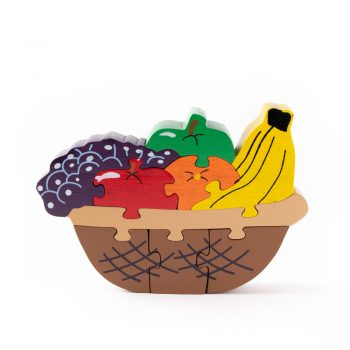
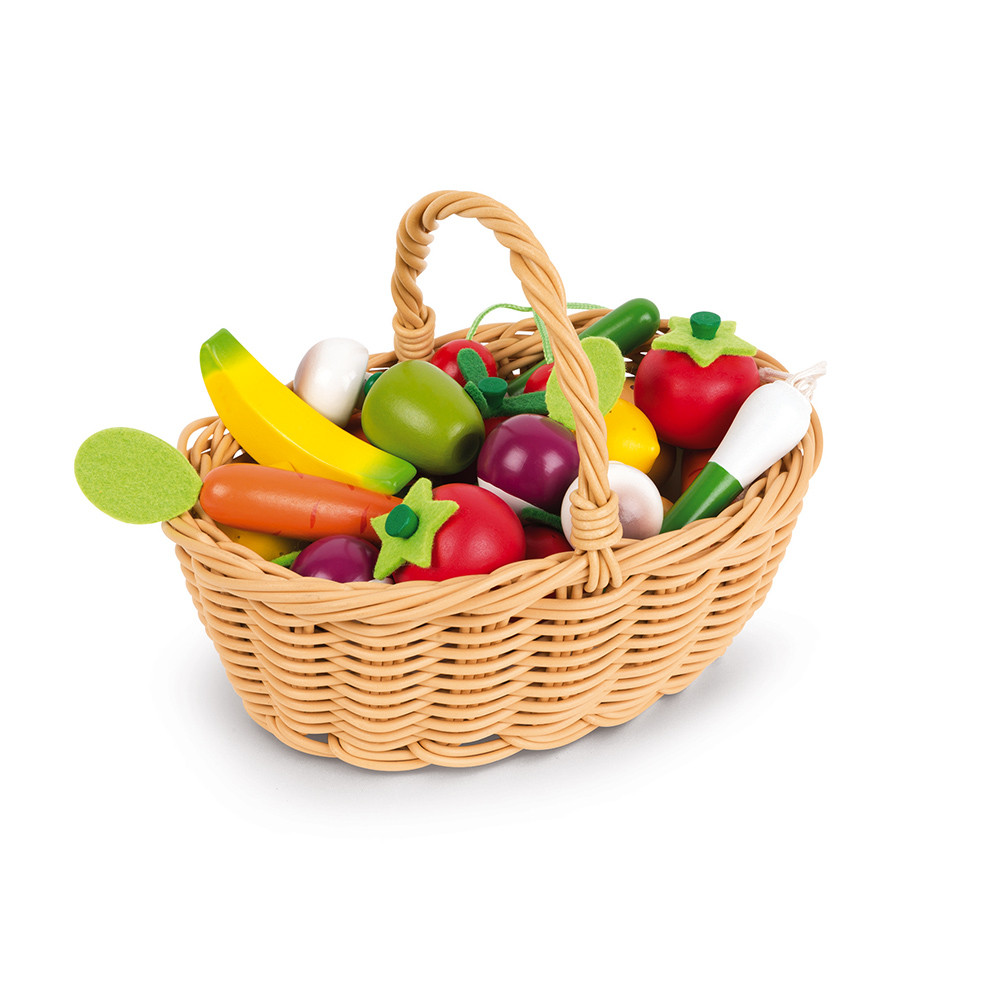

| Fresh Fruits | |
|---|---|
| It has long been known that a diet that includes at least a few servings of fresh fruit every day will help keep you healthy, fit and trim. |  |
| Same with vegetables, they are important sources of many nutrients, including potassium, dietary fiber, folate, vitamin A, and vitamin C. |  |